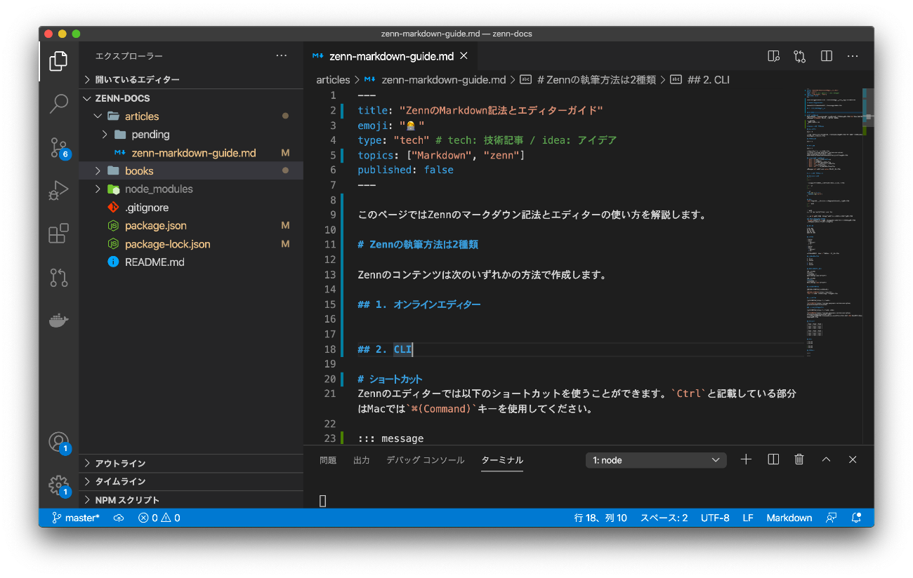

このページではZennで記事や本を作成するときの執筆環境について紹介します。
Zenn の執筆方法は 2 種類
Zennのコンテンツは次のいずれかの方法で作成します。
1. Webエディター

ブラウザ上で動くエディターです。Zennにログインした状態で使用します。
ショートカットを使用しよう
オンラインのmarkdownエディターでは、以下のショートカットを使用できます。
- Ctrl + P（プレビュー）：markdownがどのように表示されるかをチェックできます。 もう一度ショートカットを実行すると、エディターに戻ります。
- Ctrl + S（内容の保存）：変更内容を保存します。
- Ctrl + I（埋め込み）：ツイートや YouTube、CodePen、SpeakerDeck などの埋め込みコンテンツを挿入するためのモーダルが表示されます。
※ Mac の場合はCtrlの代わりに⌘キーを使用します。
ローカルのテキストエディター + CLI

自分の好きな環境で執筆したい方はGitHubリポジトリとの連携機能 を利用することをおすすめします。 リポジトリ連携をすると、特定のブランチに変更があったときに自動でコンテンツがzenn.devに反映されるようになります。
リポジトリ連携時には、ローカルでmarkdownファイルを作成し、好きなテキストエディターで編集を行います。Zenn CLIを使うことでブラウザでプレビューしながら執筆することが可能になります。
オンラインエディターを使う場合も、CLIを使う場合もmarkdownの書き方は変わりません。具体的な記法は下記のリンク先をご覧ください。
GitHubで編集を提案